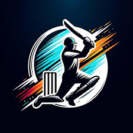
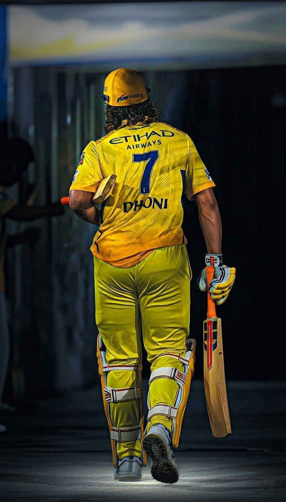
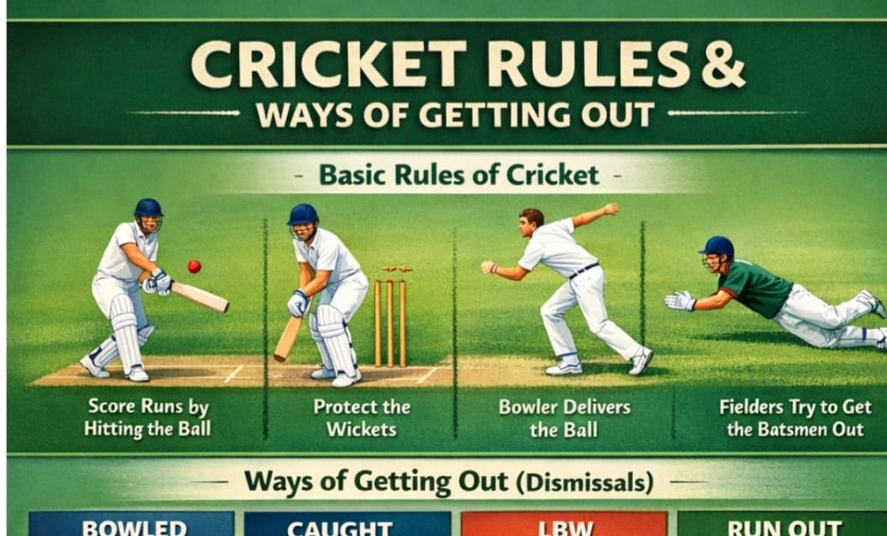

**Cricket** is one of the most popular sports in the world, especially in countries like India, Australia, England, and Pakistan. It is played between two teams of eleven players on a large circular or oval-shaped field with a rectangular pitch in the center. The game involves batting, bowling, and fielding. One team bats to score runs while the other team bowls and fields to restrict runs and dismiss the batsmen. A batsman scores runs by hitting the ball and running between the wickets or by hitting the ball to the boundary for four or six runs. The bowler tries to get the batsman out by hitting the wickets, catching the ball, or through other methods such as LBW. Cricket is played in different formats including Test matches, One Day Internationals (ODIs), and T20 matches, each having different durations and rules. The sport is governed internationally by the International Cricket Council, which organizes major tournaments like the ICC Cricket World Cup. Cricket is not only a sport but also a passion for millions of fans who watch matches in stadiums and on television, supporting their favorite teams and players. The game requires skill, teamwork, strategy, and patience, making it both exciting and challenging. Many legendary players such as Sachin Tendulkar, Virat Kohli, and Don Bradman have made significant contributions to the history of cricket and inspired young players around the world. Today, cricket continues to grow globally, bringing people together and creating unforgettable sporting moments. 🏏

Cricket is a sport with a rich history and a complex set of rules. Here are some of the basic rules of cricket:
Here is an image showing **cricket rules and the different ways a batsman can get out (wickets)**.  ### Main Cricket Rules
1. **Two teams** play with **11 players each**.
2. One team **bats** to score runs, and the other team **bowls and fields**.
3. A batsman scores runs by **hitting the ball and running between wickets**.
4. If the ball reaches the **boundary**, it is **4 runs**.
5. If the ball crosses the boundary **without touching the ground**, it is **6 runs**.
6. Each team gets **10 wickets**, and when they are out, the innings ends.
### Ways a Batsman Can Get Out (Wickets)7. **Bowled** – The ball hits the stumps and removes the bails.
8. **Caught** – A fielder catches the ball before it touches the ground.
9. **LBW (Leg Before Wicket)** – The ball hits the batsman’s leg in line with the stumps.
10. **Run Out** – The fielding team breaks the stumps before the batsman reaches the crease.
11. **Stumped** – The wicketkeeper removes the bails when the batsman is outside the crease.
12. **Hit Wicket** – The batsman accidentally hits the stumps with the bat or body.
13. **Obstructing the Field** – The batsman intentionally blocks the fielders.
14. **Handled the Ball** – The batsman touches the ball with the hand without permission.
If you want, I can also give **separate images for each wicket type (Bowled, Caught, LBW, Run Out, etc.)** for your project or assignment. 🏏
| Name | Age | Mobile | Father Name | Nation | Criteria | Category | Batting Style | Batting Position | Bowling Hand | Bowling Style |
|---|---|---|---|---|---|---|---|---|---|---|
| Dhoni | 42 | 9876543210 | Abraham | India | Above 19 | Batsman | Right Hand | Middle order | Right Hand | Medium pace bowler |
If you have any questions or would like to get in touch with us, please feel free to contact us through the following methods:
telephone: +91 9876543210
Email: cricket@gmail.com